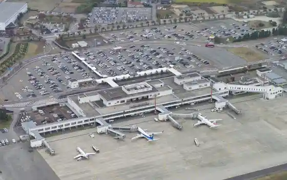
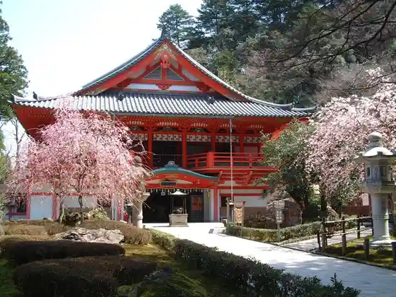
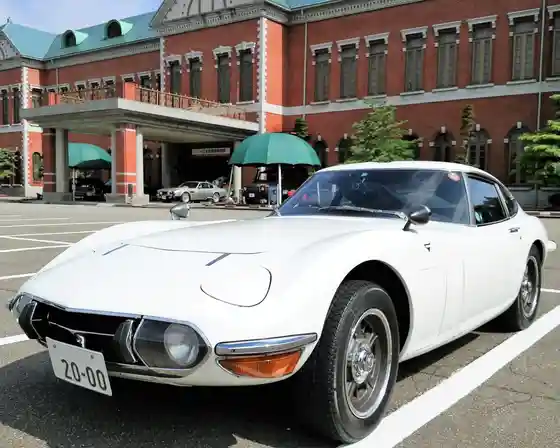
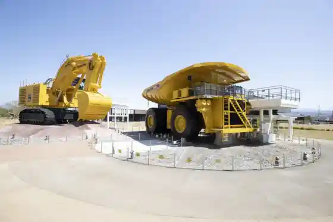

Komatsu Airport
Komatsu, Ishikawa · 0761-21-9803 · Official / source link

Nata Tera
Komatsu, Ishikawa · 0761-65-2111 · Official / source link

Nippon Jidosha Museum
Komatsu, Ishikawa · 0761-43-4343 · Official / source link

Komatsu no Mori
Komatsu, Ishikawa · 0761-24-2154 · Official / source link

Roadside Station Komatsu Kiba Kata Tomen no Kan, Eigyojikan Henko
Komatsu, Ishikawa · 0761-25-1188 · Official / source link
Ishikawa Prefectural Koku Plaza
Komatsu, Ishikawa · 0761-23-4811 · Official / source link
Antaku no Kan
Komatsu, Ishikawa · 0761-21-6734 · Official / source link
Kokujieitai Komatsu Kichi
Komatsu, Ishikawa · 0761-22-2101 · Official / source link
Kaga Dentokogei Village Yu no Kuni Forest
Komatsu, Ishikawa · 0761-65-3456 · Official / source link
Eichi no Mori / Koke Village
Komatsu, Ishikawa · 090-7083-6969 · Official / source link
Awazu Onsen
Komatsu, Ishikawa · 0761-65-1834 · Official / source link
Saiensuhiruzu Komatsu
Komatsu, Ishikawa · 0761-22-8610 · Official / source link
Okura Gaku Highlands
Komatsu, Ishikawa · 0761-67-1426 · Official / source link
Komatsu Awazu Kojo
Komatsu, Ishikawa · 0761-21-3121 · Official / source link
Hanibe Gankutsu In
Komatsu, Ishikawa · 0761-47-3188 · Official / source link
Awazu Onsen Soyu
Komatsu, Ishikawa · 0761-65-1120 · Official / source link
Yu no Kuni Forest
Komatsu, Ishikawa · 0761-65-3456 · Official / source link
Antaku Sumiyoshi Shrine
Komatsu, Ishikawa · 0761-22-8896 · Official / source link
Nata Tera De Kigan Yusen Sakai Experience & Asa no Keidai Sansaku
Komatsu, Ishikawa · 0761-65-2111 · Official / source link
Kurakage Yama
Komatsu, Ishikawa · 0761-24-8076 · Official / source link
Autumn Leaves no Nata Tera Wo Asa Ni Sansaku
Komatsu, Ishikawa · 0761-65-2111 · Official / source link
Kiba Kata Park
Komatsu, Ishikawa · 0761-43-3106 · Official / source link
(Antaku no Kan) Komatsu Kanjincho Village Kanjincho Mo no Gatari Kan
Komatsu, Ishikawa · 0761-21-6734 · Official / source link
Tsuchii Hara Bonnetto Plaza
Komatsu, Ishikawa · 090-7087-5011 · Official / source link
Aramata Kyo
Komatsu, Ishikawa · Official / source link
Kiba Onsen Koyama So
Komatsu, Ishikawa · 0761-44-3596 · Official / source link
Junigataki
Komatsu, Ishikawa · Official / source link
Ogaki Yama Kan Kiji
Komatsu, Ishikawa · 0761-22-0526 · Official / source link
Minami Kaga Kosetsu Chiho Oroshiuri Market
Komatsu, Ishikawa · 0761-24-6611 · Official / source link
Kutani Seramikku Raboratorii
Komatsu, Ishikawa · 0761-48-4235 · Official / source link
Ashiki Park
Komatsu, Ishikawa · 0761-24-8101 · Official / source link
Satoyama Shizengaku Ko Osugi Midori Village
Komatsu, Ishikawa · 0761-46-1812 · Official / source link
Ta Ta Shrine Ta Omikami Shaho Mono Kan
Komatsu, Ishikawa · Official / source link
Mikusa Futatsugi Saien Tera
Komatsu, Ishikawa · 0761-48-7773 · Official / source link
Ekorojii Park Komatsu
Komatsu, Ishikawa · 0761-41-1600 · Official / source link
Komatsu Kiba Kata Supotsu Kenshu Center
Komatsu, Ishikawa · 0761-43-0431 · Official / source link
Fureai Kenko Plaza
Komatsu, Ishikawa · 0761-23-4570 · Official / source link
Ashiki Onsen Sakura Yu
Komatsu, Ishikawa · 0761-22-5060 · Official / source link
Awazu Onsen Ashiyu
Komatsu, Ishikawa · 0761-65-1120 · Official / source link
Satoyama Kenko Gakko Seseragi no Sato
Komatsu, Ishikawa · 0761-46-1919 · Official / source link
Kamamoto Kutani Ryo Yama Do Kutani Yaki Taiken Kobo Ryo Yama
Komatsu, Ishikawa · Official / source link
Ishikawa Prefectural O Koya Kozan Museum / Mainrodo
Komatsu, Ishikawa · 0761-67-1122 · Official / source link
Suwa Miya Usagi Hashi Shrine
Komatsu, Ishikawa · 0761-22-0626 · Official / source link
Kiba Onsen
Komatsu, Ishikawa · 0761-44-3596 · Official / source link
Antaku Seaside Park
Komatsu, Ishikawa · 0761-24-3074 · Official / source link
Komatsu Miyage Mise
Komatsu, Ishikawa · 0761-21-8208 · Official / source link
Higashi Shuzo
Komatsu, Ishikawa · 0120-47-2302 · Official / source link
Komatsu Kyu
Komatsu, Ishikawa · 0761-58-2775 · Official / source link
Yu Izumi Tera Dozan Ato
Komatsu, Ishikawa · 0761-24-8076 · Official / source link
Tsubame Yama Honren Tera
Komatsu, Ishikawa · 0761-22-0542 · Official / source link
(Antaku no Kan) Komatsu Kanjincho Village
Komatsu, Ishikawa · 0761-21-6734 · Official / source link
Kaga Taiko Experience
Komatsu, Ishikawa · Official / source link
Nishimata Campground
Komatsu, Ishikawa · 0761-67-8100 · Official / source link
Shimin Bosai Kan (Komatsu Tami Bosai Center)
Komatsu, Ishikawa · 0761-20-2706 · Official / source link
Jiei Basu Komatsu Kojo
Komatsu, Ishikawa · 0761-44-8610 · Official / source link
Asai Nawate Kosenjo
Komatsu, Ishikawa · 0761-24-8130 · Official / source link
Basho no Kuhi (Komatsu Tera Town)
Komatsu, Ishikawa · 0761-21-3170 · Official / source link
Komatsu Miyage Mise Komatsu Airport
Komatsu, Ishikawa · 0761-24-0831 · Official / source link
Imae Onsen Motoyu
Komatsu, Ishikawa · 0761-21-4126 · Official / source link
Chashitsu (Senso Yashiki Narabini Gen'an)
Komatsu, Ishikawa · 0761-24-1656 · Official / source link
Basho no Kuhi (Komatsu Nata Town)
Komatsu, Ishikawa · 0761-65-2111 · Official / source link
Komatsu Ritsu Sora Tokodomo Ehon Kan
Komatsu, Ishikawa · 0761-23-0033 · Official / source link
Kushi Chaya Yujo no Haka
Komatsu, Ishikawa · 0761-24-8130 · Official / source link
Motohiro Tera (Awazu Onsen)
Komatsu, Ishikawa · 0761-65-2300 · Official / source link
Okura Gaku Kogen Ski Area
Komatsu, Ishikawa · 0761-67-1426 · Official / source link
Komatsu Ritsu Kaga Ko Mo no Gatari Kan
Komatsu, Ishikawa · 0761-47-4533 · Official / source link
Daio Tera (Awazu Onsen)
Komatsu, Ishikawa · 0761-65-1217 · Official / source link
Satoyama Shizengaku Ko Komatsu Takigahara
Komatsu, Ishikawa · 0761-65-2436 · Official / source link
Ikoi Forest
Komatsu, Ishikawa · Official / source link
Komatsu Hikiyama Koryu Kan
Komatsu, Ishikawa · 0761-23-3413 · Official / source link
Komatsu Ritsu Miyamoto Saburo Art Museum
Komatsu, Ishikawa · Official / source link
Antaku Park
Komatsu, Ishikawa · 0761-24-8101 · Official / source link
Komon Sugi
Komatsu, Ishikawa · 0761-65-1834 · Official / source link
Ishikawaken Komatsu Danjuro Geijutsugekijo Urara
Komatsu, Ishikawa · 0761-20-5500 · Official / source link
Pikkurubiito
Komatsu, Ishikawa · Official / source link
Sanno Miya Hon Ori Hiyoshi Shrine
Komatsu, Ishikawa · 0761-22-0163 · Official / source link
Osshobe Plaza (Odoro Ssa)
Komatsu, Ishikawa · Official / source link
Ken'ei Awazu Park
Komatsu, Ishikawa · Official / source link
Kannon Yama
Komatsu, Ishikawa · 0761-24-8076 · Official / source link
Do Yama
Komatsu, Ishikawa · 0761-24-8076 · Official / source link
Rennyo Yama
Komatsu, Ishikawa · 0761-24-8076 · Official / source link
Kanjincho Mo no Gatari Kan
Komatsu, Ishikawa · 0761-21-6734 · Official / source link
Komatsu Tenmangu Shrine
Komatsu, Ishikawa · 0761-22-2539 · Official / source link
Komatsu Sei Kawara
Komatsu, Ishikawa · 0761-47-2219 · Official / source link
Iwakura Joshi Promenade
Komatsu, Ishikawa · 0761-24-8076 · Official / source link
Manten no Tsuji no Ya
Komatsu, Ishikawa · 0761-65-1311 · Official / source link
Komatsu Maizo Bunkazai Center
Komatsu, Ishikawa · 0761-47-5713 · Official / source link
Hotoke Omae Yashikiato Hotoke Omae Haka
Komatsu, Ishikawa · Official / source link
Awazu Dakeyama
Komatsu, Ishikawa · 0761-24-8076 · Official / source link
Komatsu Ritsu Noborigama Tenjikan
Komatsu, Ishikawa · 0761-47-2898 · Official / source link
Dainichi Yama
Komatsu, Ishikawa · 0761-24-8067 · Official / source link
Yokotani Mizubasho Gunsei Chi
Komatsu, Ishikawa · 0761-24-8076 · Official / source link
Satoyama Mirai Kan
Komatsu, Ishikawa · 0761-58-2710 · Official / source link
Komatsu Shiromoto Maru Yaguradai Ishigaki
Komatsu, Ishikawa · 0761-24-8130 · Official / source link
Koibito no Seichi (Awazu Onsen)
Komatsu, Ishikawa · 0761-65-1834 · Official / source link
Komatsu Tourist Information
Komatsu, Ishikawa · 0761-21-8208 · Official / source link
Kabukkii Land
Komatsu, Ishikawa · 0761-58-1212 · Official / source link
Komatsu Ritsuhon Jin Kinen Art Museum
Komatsu, Ishikawa · 0761-22-3384 · Official / source link
Komatsu Ritsu Nishiki Kama Tenjikan
Komatsu, Ishikawa · 0761-23-2668 · Official / source link
Ei Tatsuyama Ken Hijiri Tera
Komatsu, Ishikawa · Official / source link
Showa Toji no Yado Midori Hana En
Komatsu, Ishikawa · 0761-65-1100 · Official / source link
Himawari no Oka
Komatsu, Ishikawa · 0761-23-4040 · Official / source link
Uchikoshi Yama Katsumitsu Tera
Komatsu, Ishikawa · 0761-22-0797 · Official / source link
Nihonryori Sushi Kappo Tsuru Maru
Komatsu, Ishikawa · 0761-24-3380 · Official / source link
Shuzo Kaetsu
Komatsu, Ishikawa · 0761-22-5321 · Official / source link
Komatsu Gasu Sono Kojo
Komatsu, Ishikawa · 0761-24-0525 · Official / source link
Tora Ya Toki Mise (Kotoraya)
Komatsu, Ishikawa · 0761-22-0423 · Official / source link
Nishi Jo Tomo Do
Komatsu, Ishikawa · 0761-47-2077 · Official / source link
Godo Kaisha Nishide Shuzo
Komatsu, Ishikawa · 0761-44-8188 · Official / source link
Mokumoku Workshop
Komatsu, Ishikawa · 0761-46-8100 · Official / source link
Osugi Shrine no Icho
Komatsu, Ishikawa · 0761-24-8130 · Official / source link
Taka Raku Yama
Komatsu, Ishikawa · 0761-24-8076 · Official / source link
Ebata Shoku Nemu
Komatsu, Ishikawa · 0761-44-8061 · Official / source link
Nami Saya Castle Ruins
Komatsu, Ishikawa · 0761-24-8076 · Official / source link
Yoshi Shima Shrine
Komatsu, Ishikawa · 0761-24-0292 · Official / source link
Matsuoka Yama Shingyoji
Komatsu, Ishikawa · 0761-22-6432 · Official / source link
Asazo Goju Kichi Shin Kaori to Kama
Komatsu, Ishikawa · 0761-47-0051 · Official / source link
Komatsu Ritsu Miyamoto Saburo Furusato Kan
Komatsu, Ishikawa · Official / source link
San Doji Yama
Komatsu, Ishikawa · 0761-24-8076 · Official / source link
Hatoato Kobo Kanda
Komatsu, Ishikawa · 0761-22-0462 · Official / source link
Mase Yama
Komatsu, Ishikawa · 0761-24-8076 · Official / source link
Maki Himezuka (Awazu Onsen)
Komatsu, Ishikawa · 0761-65-1834 · Official / source link
Asuwa Yama Hongaku Tera
Komatsu, Ishikawa · 0761-22-0516 · Official / source link
Japan Kutani no Furusato Shoun Do
Komatsu, Ishikawa · 0761-23-3413 · Official / source link
Nunohashi Mizubasho Gunsei Chi
Komatsu, Ishikawa · 0761-24-8130 · Official / source link
Komatsu Yakusho
Komatsu, Ishikawa · 0761-22-4111 · Official / source link